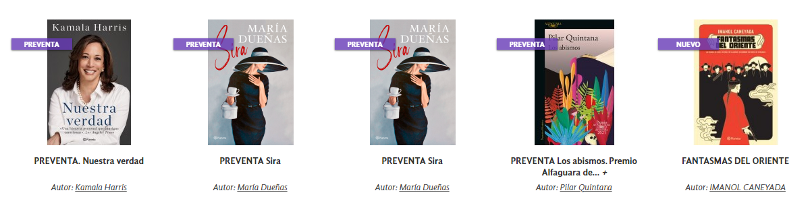

¡Conocenos!
La estructura administrativa de la Biblioteca es muy moderna y dinámica, sin apartarse de los principios teóricos que fundamentan nuestro quehacer, y básicamente plana, lo que le proporciona agilidad
Por ello es que encontrará una cartera de servicios muy diversa que incluye la información necesaria para que usted pueda establecer un contacto directo, vía telefónica y electrónica
Explora nuestras colecciones
Tenemos lista para ti una gran y amplia gama de libros, enciclopedias, revistas, periodicos, noticias entre otros a los cuales les puedes sacar el mayor de los partidos para tu beneficio.
Nuestra seleccion recomendada para ti
creemos que te podria interesar alguno de nuestros siguientes titulos, te los dejamos a continuacion.
Porque hay historias que no pueden esperar
abrimos una seccion de novedades donde nos encargamos de publicar titulos, que son los mas top y los + recientes!
